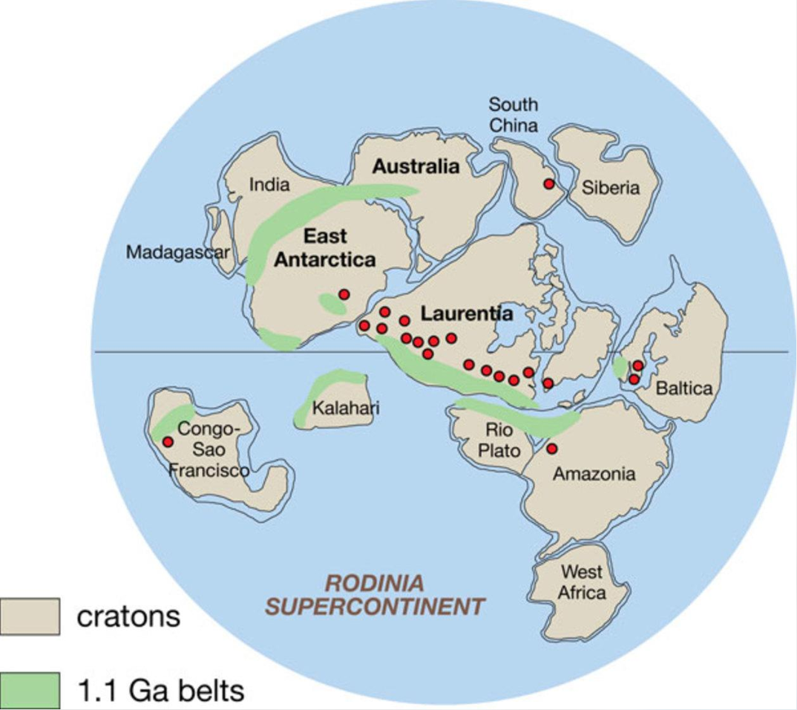

Rodinia
Hace aproximadamente entre 1.100 y 900 millones de años, grandes bloques de corteza continental se reunieron para formar Rodinia, uno de los supercontinentes más importantes de la historia geológica. Su nombre procede de una palabra rusa relacionada con la idea de origen o tierra natal.
Rodinia existió durante una parte del Proterozoico, mucho antes de que los continentes adquirieran su distribución actual. Aunque los geólogos consideran que un supercontinente de esta época llegó a formarse, todavía investigan cómo estaban colocados exactamente sus bloques y qué regiones participaron en su configuración.
La unión de los continentes
Rodinia se formó mediante procesos tectónicos que reunieron antiguos bloques continentales a lo largo de cientos de millones de años. Las colisiones deformaron las rocas y produjeron grandes cinturones montañosos, cuyos restos pueden reconocerse hoy en distintas partes del mundo.
Muchas reconstrucciones sitúan a Laurentia, un antiguo núcleo continental que hoy forma gran parte de Norteamérica, cerca de una posición central. Alrededor de él se habrían unido otros bloques, algunos de los cuales hoy forman partes de Sudamérica, África, Australia, la Antártida, India y Asia.
Sin embargo, no existe una única reconstrucción aceptada en todos sus detalles. Las posiciones relativas de varios bloques continentales continúan siendo discutidas a partir de las evidencias geológicas y paleomagnéticas.
¿Cómo estudian los científicos a Rodinia?
No es posible observar directamente un mapa de aquel mundo. Su historia se reconstruye mediante evidencias conservadas en las rocas:
- Rocas antiguas: permiten comparar edades y procesos geológicos en regiones hoy separadas.
- Cinturones montañosos: conservan señales de colisiones continentales ocurridas hace cientos de millones de años.
- Paleomagnetismo: ayuda a estimar las antiguas latitudes y orientaciones de los bloques continentales.
- Registros de rifting: muestran dónde la corteza comenzó a estirarse y separarse antes de la apertura de nuevos océanos.
La fragmentación de Rodinia
Con el tiempo, la actividad tectónica y el ascenso de material caliente del manto contribuyeron a debilitar y estirar partes de la corteza. En distintas regiones comenzaron a abrirse fracturas y zonas de rift, precursoras de nuevos márgenes continentales y cuencas oceánicas.
La fragmentación empezó en algunas zonas hace aproximadamente 825 a 750 millones de años, aunque la separación de los diferentes bloques continuó durante mucho más tiempo. No fue un acontecimiento único ni simultáneo en todo el planeta.
Rodinia y los cambios de la vida
Durante el Neoproterozoico, la Tierra experimentó transformaciones ambientales importantes. En este intervalo ocurrieron episodios de glaciación extensa y cambios en los océanos y la atmósfera. Algunos de estos acontecimientos coincidieron con la fragmentación de Rodinia, pero las relaciones causales siguen siendo objeto de estudio.
Estos cambios forman parte del contexto en el que evolucionaron los organismos eucariotas y, posteriormente, aparecieron formas de vida multicelular más complejas. Rodinia ayuda a situar esos procesos dentro de una historia planetaria mucho más amplia.
¿Por qué es importante?
Rodinia permite comprender cómo se ensamblan y fragmentan los supercontinentes, cómo se transforma la corteza terrestre y cómo la geografía influye en los océanos y el clima. Su historia también sirve para estudiar la transición hacia las configuraciones continentales que precedieron a Gondwana y, mucho después, a Pangea.